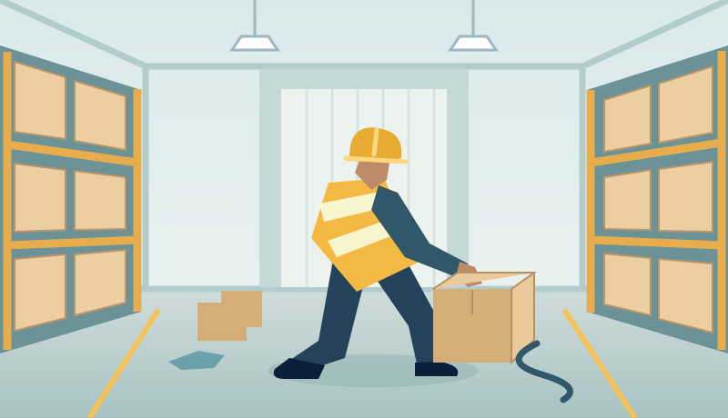

Guided lessons
Move through focused topics in a clear sequence, with context at each step.
A connected learning experience that brings together guided modules, interactive scenarios, and a clear view of progress.
 Featured learning module
Featured learning module
Build awareness. Practise safer decisions.
Select the three markers to explore potential hazards.

Small observations can lead to safer decisions.
A simple view of your learning journey.
Illustrative sample data. Explore how progress and feedback could appear for a learner.
Enter the supplied SafeStep training experience, choose a module, inspect every hazard hotspot, complete the knowledge check and review your final score.
Includes complete Warehouse Hazard Training and Working at Height journeys. Fire Safety is presented as a future module.
Featured module · Manual Handling
The Manual Handling module introduces common handling risks through visual examples, guided lessons, and scenario decisions. Learners can check their understanding and reflect on their choices.
Modules are designed to support workplace learning alongside role-specific instruction and local procedures.
Discuss your training needsClear structure and varied interactions keep the focus on understanding.
Move through focused topics in a clear sequence, with context at each step.
Pause to check understanding and revisit ideas that need more attention.
Consider realistic situations and explore the implications of different choices.
Use illustrations and workplace scenes to connect concepts with familiar tasks.
Finish a module with a clear summary and useful points for reflection.
Work through content at a manageable pace and resume where you left off.
A proposed 360-degree training environment lets learners explore a digital workplace, investigate points of interest, and practise recognising hazards without entering a live risk area.
The interactive preview above gives a small taste of this approach using a flat illustrated scene. A full 360° environment is part of the platform concept.
Try the scenario previewExplore the environment. Identify potential hazards. Reflect on your choices.
Platform conceptA personal dashboard keeps the learning journey organised.
A shared view helps you plan and follow up on training.
We can explore a project scope with you, from understanding the challenge to testing a working prototype.
Proposed services within the SafeStep student project.
Let’s explore what better safety training could look like for your team.